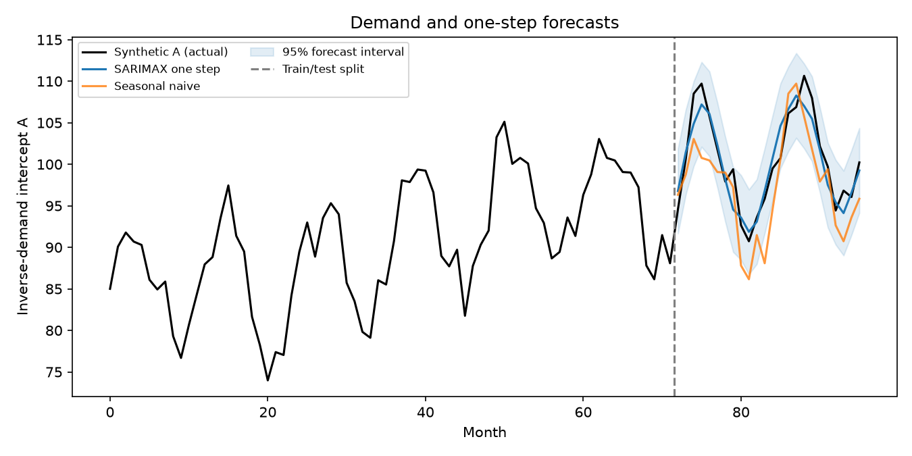
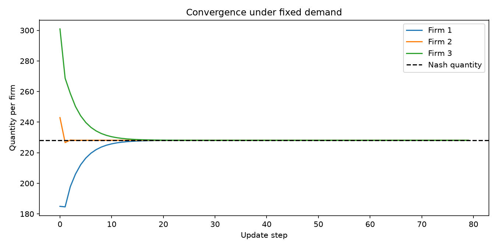
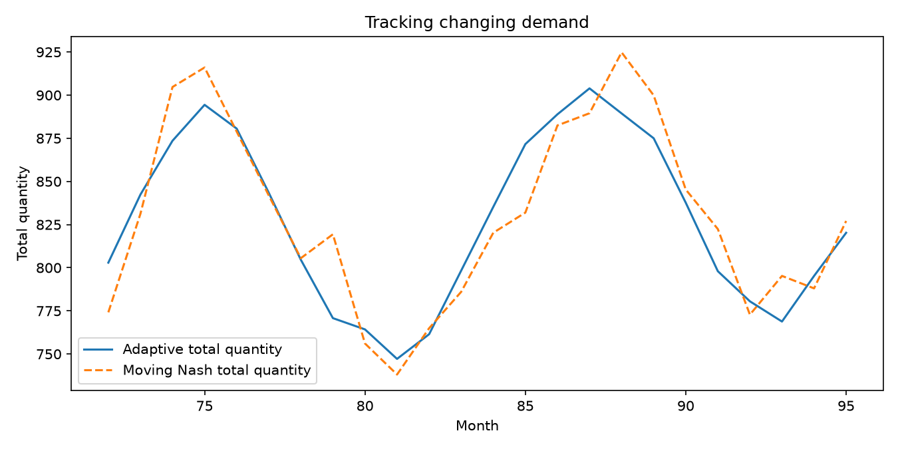
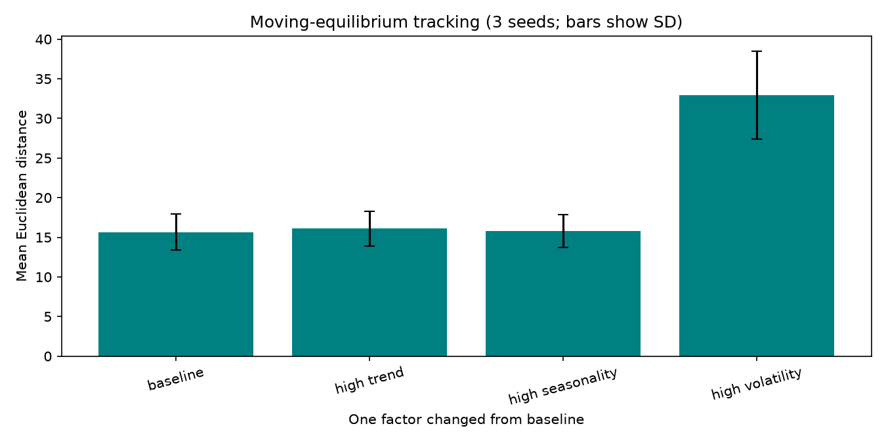

Project overview · Current stage: 17 October 2026
What happens when three firms forecast demand and compete?
They each choose how much of the same product to make. More combined production lowers the market price. This simulation follows their decisions as demand changes month by month.
Simulation using synthetic demand, not real salesHow it works
The project connects a demand forecast to a simple model of quantity competition.
Create the market
Generate 96 months of artificial demand with a rising trend, yearly seasons, and random shocks.
Predict next month
Learn from 72 months, then predict each of the next 24 months before its actual demand is revealed.
Choose production
Each of the three firms uses the forecast and its rivals' previous quantities. It moves 55% toward its preferred quantity.
See the outcome
Actual demand and total production set the price. The simulation calculates profits and compares quantities with the theoretical equilibrium.
What this stage shows
These numbers come from the saved simulation results. Forecast errors use the main 24-month test; tracking distances compare three generated runs per scenario.
When demand is held constant, the firms' quantities move toward the theoretical equilibrium. When demand changes, the equilibrium moves too, so the firms can lag behind it. These are outcomes of this model, not estimates from a real market.
See the simulation
The plots are generated by the Python project. Re-running it updates the images linked here.




As the project grows, this page can be updated with new model assumptions, experiments, and findings. The README is the short written overview of this stage.